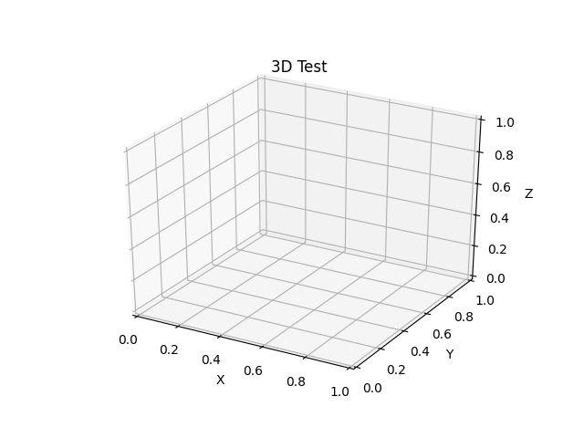

Note
Click here to download the full example code
Animated 3D random walk¶
import numpy as np
import matplotlib.pyplot as plt
import matplotlib.animation as animation
# Fixing random state for reproducibility
np.random.seed(19680801)
def gen_rand_line(length, dims=2):
"""
Create a line using a random walk algorithm.
Parameters
----------
length : int
The number of points of the line.
dims : int
The number of dimensions of the line.
"""
line_data = np.empty((dims, length))
line_data[:, 0] = np.random.rand(dims)
for index in range(1, length):
# scaling the random numbers by 0.1 so
# movement is small compared to position.
# subtraction by 0.5 is to change the range to [-0.5, 0.5]
# to allow a line to move backwards.
step = (np.random.rand(dims) - 0.5) * 0.1
line_data[:, index] = line_data[:, index - 1] + step
return line_data
def update_lines(num, dataLines, lines):
for line, data in zip(lines, dataLines):
# NOTE: there is no .set_data() for 3 dim data...
line.set_data(data[0:2, :num])
line.set_3d_properties(data[2, :num])
return lines
# Attaching 3D axis to the figure
fig = plt.figure()
ax = fig.add_subplot(projection="3d")
# Fifty lines of random 3-D lines
data = [gen_rand_line(25, 3) for index in range(50)]
# Creating fifty line objects.
# NOTE: Can't pass empty arrays into 3d version of plot()
lines = [ax.plot(dat[0, 0:1], dat[1, 0:1], dat[2, 0:1])[0] for dat in data]
# Setting the axes properties
ax.set_xlim3d([0.0, 1.0])
ax.set_xlabel('X')
ax.set_ylim3d([0.0, 1.0])
ax.set_ylabel('Y')
ax.set_zlim3d([0.0, 1.0])
ax.set_zlabel('Z')
ax.set_title('3D Test')
# Creating the Animation object
line_ani = animation.FuncAnimation(
fig, update_lines, 25, fargs=(data, lines), interval=50)
plt.show()
Keywords: matplotlib code example, codex, python plot, pyplot Gallery generated by Sphinx-Gallery